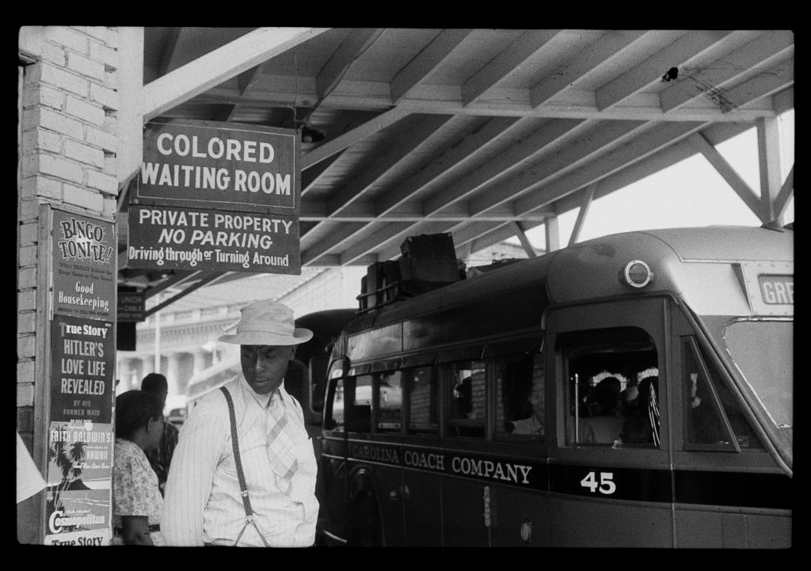
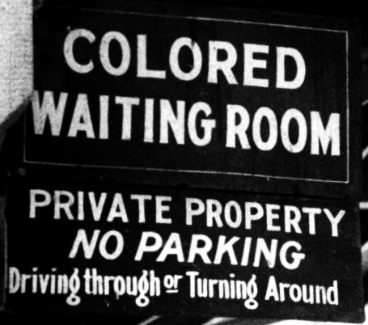
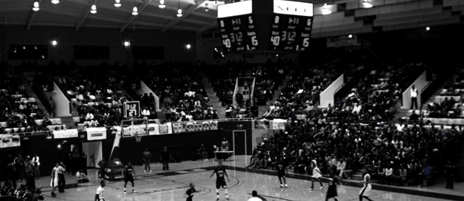

DURHAM · CAROLINA DEL NORTE · 1940 · FOTO: JACK DELANO (LIBRARY OF CONGRESS), DOMINIO PÚBLICORECREACIÓN
DURHAM · FOTO (2005): GREGW824, DOMINIO PÚBLICO
JOHN McLENDON
ENTRENADOR · SILUETA: RECREACIÓN
MEDICINA · DUKE
ESTUDIANTES

DURHAM, 1940 · FOTO: JACK DELANO (LIBRARY OF CONGRESS), DOMINIO PÚBLICOPROHIBIDO
MARCADORRECREACIÓN
EAGLES0 – 0DUKE

HOY: GIMNASIO McLENDON–McDOUGALD (NCCU, DURHAM) · FOTO (2011): RDUPEDIA, CC BY-SA 3.0JUNTOS
FOTOS: JACK DELANO (LIBRARY OF CONGRESS) Y GREGW824, DOMINIO PÚBLICO ·
RDUPEDIA, CC BY-SA 3.0 · VÍA WIKIMEDIA COMMONS ·
CALENDARIO, SILUETA, PISTA, FICHAS Y MARCADOR: RECREACIÓN